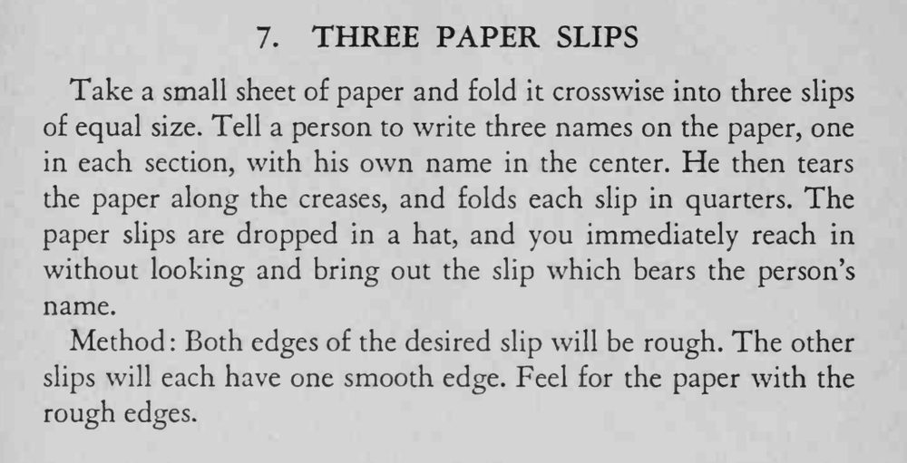

观众在纸上写三个名字（中间写自己的），撕成三张折好丢进帽子，魔术师不看就摸出写着他自己名字的那张。
撕的方向决定毛边，记住目标纸两头都不齐。

Take a small sheet of paper and fold it crosswise into three slips of equal size. Tell a person to write three names on the paper, one in each section, with his own name in the center. He then tears the paper along the creases, and folds each slip in quarters. The paper slips are dropped in a hat, and you immediately reach in without looking and bring out the slip which bears the person's name. Method Both edges of the desired slip will be rough. The other slips will each have one smooth edge. Feel for the paper with the rough edges.